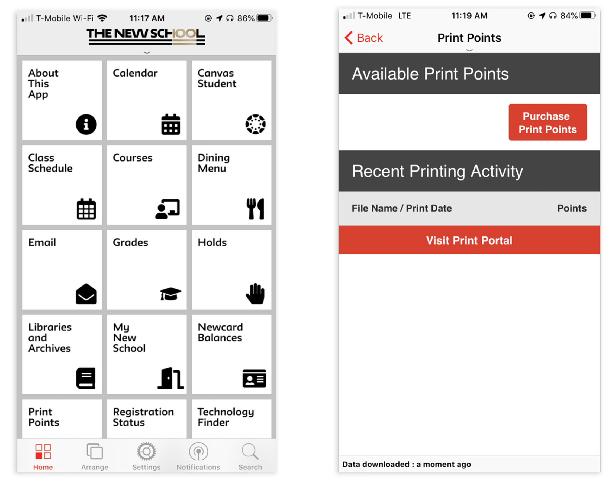
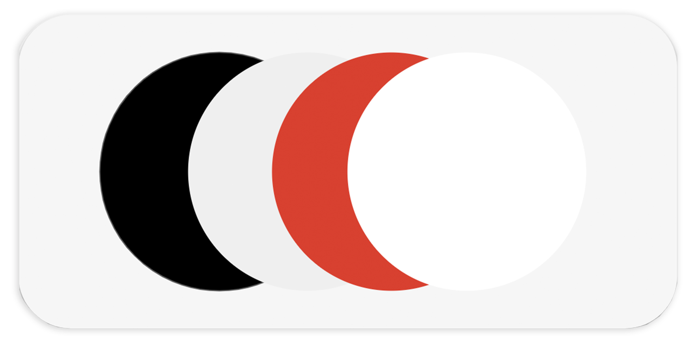
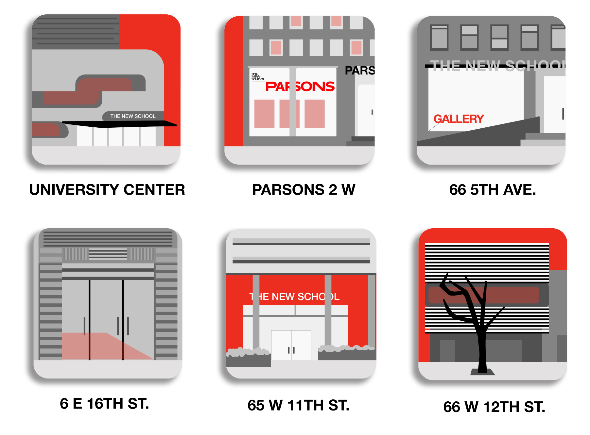
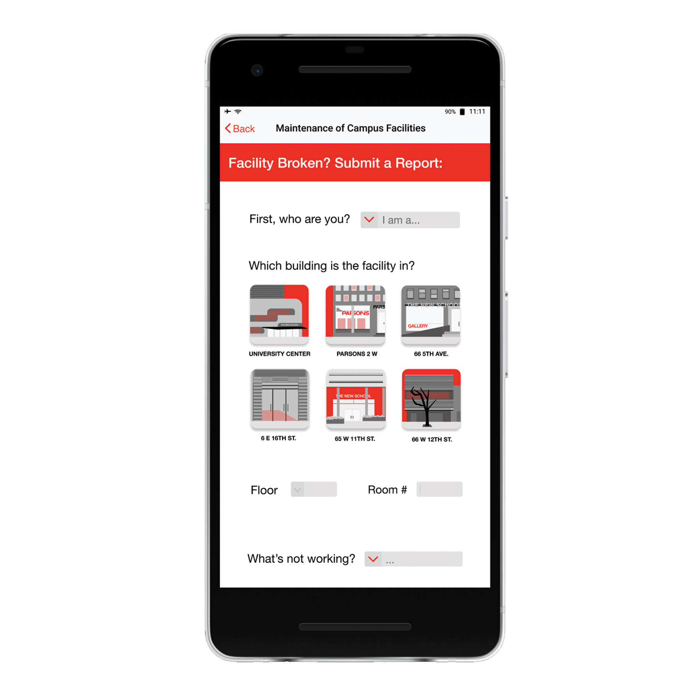
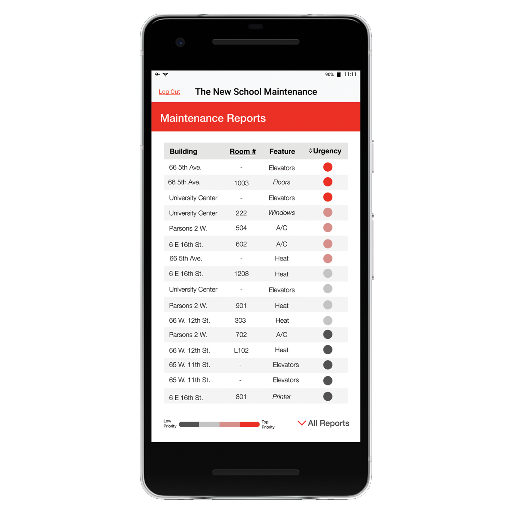

The Goal
Improve the upkeep of campus facilities by creating a platform through
which students and faculty can report any building or equipment issues
they see.
Research
How students can do this now:
Online
- → Hard to find
- → Need separate account to use
- → Intimidating Interface
- → Uses overly complex language
By Phone
- → Number given is for campus security
- → Indirect Report
- → No feedback or updates
- → More work for campus security
Popular outlets/platforms used by students for school information:
The New School App
- → Downloaded by most students
- → Recently launched
- → No way to report broken facilities
Would students report broken facilties if given a platform?
Based on those I talked to, yes, but only if it is
- → Easy to report
- → A quick process
Method of deployment
Deploy on The New School App with an online counterpart

The New School App Interface
Design Aspects
Color Scheme

Design Goals
Reporting End
- → Easy to Access
- → Quick to report
- → Friendly UI
- → Updates Available
Receiving End
- → Easy to use
- → Not a difficult addition
- → Friendly UI
- → Organized and customizable
Adding a visual component to both ends

I wanted to add a visual aspect to the process of both making a
report and receiving one. To make it a bit more unique to The New
School, I wanted to make each icon representative of the building's
facade.
Final Wireframes
Still Frames

Reporting End

Receiving End
Interactive Prototype--Reporting End
Interactive Prototype--Receiving End